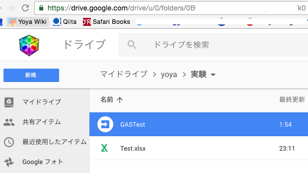

Google Apps Script 作成
まずは Google Drive 上で Apps Script のファイルを作成します。
フォルダの ID を調べます

ファイル詳細で調べられますが、面倒なので URL から ID をコピペします。
ls 的なコード
このドキュメントを見て、適当に実装します。
function myFunction() {
var folderId = "0B------------------------k0"; // URLからコピペして埋める
var folder = DriveApp.getFolderById(folder);
var [files, folders] = ls(folderId);
Logger.log(files); // ログ出力
}
// イテレータを使ってファイルとフォルダの配列を作る。
function ls(folder) {
folder = getFolder(folder);
var files = [], folders = [];
fileIte = folder.getFiles();
while (fileIte.hasNext()) {
files.push(fileIte.next());
}
folderIte = folder.getFolders();
while (folderIte.hasNext()) {
folders.push(folderIte.next());
}
return [files, folders];
}
myFunction を指定して再生ボタンを押すと、一度だけ承認を求められます。
実行したらログを確認します。
こんな感じで。
find 的なコード
searchFiles という便利なものがあります。
- searchFiles(params)
function find(folder, params) {
var files = [], folders = [];
fileIte = folder.searchFiles(params);
while (fileIte.hasNext()) {
files.push(fileIte.next());
}
folderIte = folder.searchFolders(params);
while (folderIte.hasNext()) {
folders.push(folderIte.next());
}
return [files, folders];
}
(条件を空にしてるのとサブフォルダがないので ls と同じ動きをしてます)
条件は以下のようなものが使えます。
- Search for Files
最近追加されたり編集されたファイルの一覧を出すのに便利ですね。